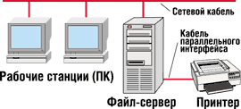
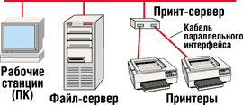
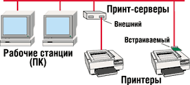
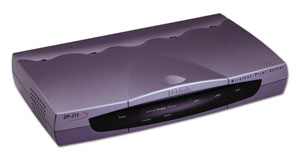

Андрей Борзенко
Сегодня принтеры, непосредственно подключенные к сети, стали традиционным офисным оборудованием. Они обеспечивают быструю печать и простую установку независимо от местоположения, что так важно администраторам сети. Однако в организациях с локальной сетью малого и среднего масштаба самым распространенным вариантом совместной сетевой печати остается персональный принтер, подключенный к одному из ПК (рис. 1). Главное достоинство этого варианта - экономичность. Однако следует помнить, что при таком способе печати задействуются ресурсы того ПК, к которому подсоединен принтер, и производительность компьютера значительно снижается. Так что при больших объемах сетевой печати использовать данный ПК по прямому назначению становится весьма затруднительно. Выделение одного компьютера лишь для сетевой печати, равно как и приобретение специального сетевого принтера, часто неоправданно с финансовой точки зрения, особенно если объемы печати не превышают возможностей используемого печатающего устройства. В решении этой проблемы и призваны помочь так называемые принт-серверы, или серверы печати.
|  | Рис. 1. Использование локального принтера.
|
Принт-серверы представляют собой небольшие сетевые устройства, к которым могут подключаться один или несколько принтеров (рис. 2). Они бывают двух типов: внешние и внутренние (рис. 3). Последние выполнены в виде платы и, как правило, могут использоваться только с определенными печатающими устройствами. Наиболее заметное ограничение внутренних сетевых плат заключается в том, что их должен поддерживать конкретный принтер. А это означает, что если принтер изготовлен до появления таких устройств или если принтер новый, но внутренние карты он не поддерживает, то придется применить внешнее устройство сетевой печати.
|  | Рис. 2. Принт-сервер на два принтера.
|
|  | Рис. 3. Внешний и встраиваемый принт-серверы.
|
Кроме того, внутренняя плата обслуживает только один принтер. Внешние серверы печати способны обслуживать одновременно несколько принтеров, и таким образом удается сэкономить на дополнительных портах. Когда единое устройство работает со многими принтерами, это также сокращает потребности в конфигурировании и необходимые ресурсы. Например, для каждого из принтеров достаточно одного IP-адреса, в то время когда принтерам с внутренней платой придется каждому выделить по отдельному адресу.
Часто внутренние сетевые платы имеют ограничения по числу поддерживаемых сетевых протоколов и их одновременной поддержке: бывает, что нужный протокол не поддерживается или два протокола не могут работать одновременно.
Внешний сервер печати обеспечивает прозрачное, совместное использование сетевого принтера. Так же, как и сетевой компьютер с подключенным к нему принтером, внешний сервер печати обладает собственным сетевым подключением, а принтер (или принтеры) подключается непосредственно к серверу. В этом случае отпадает необходимость тратиться на покупку и обслуживание сравнительно дорогого ПК - вместо него используется недорогое, малогабаритное, простое в использовании устройство.
Преимущества внешних принт-серверов
Принт-серверы обычно рекомендуется устанавливать в средних и крупных сетях, где требуется удаленное управление печатающими устройствами. Особенно эффективно их применение в тех случаях, когда в сети есть много принтеров, размещенных на разных этажах и даже в разных зданиях, и необходимо предоставить администратору максимум возможностей для управления, а пользователю - максимум удобств для работы с ними.
Экономия средств
Для печати с компьютера или файлового сервера с подключенным принтером нужно иметь этот компьютер или сервер, а они достаточно дороги. Затраты существенно возрастают, если множество принтеров, нуждающихся в доступе к сети, распределены по всему офису. Даже самый простой компьютер существенно дороже, чем мощный многопротокольный сервер печати, причем последний поддерживает одновременно несколько принтеров. Кроме того, сервер печати позволяет сократить время, затрачиваемое на поддержку и сервис (обслуживание компьютера требует существенно больше времени).
Разгрузка основного процессора
Обработка заданий печати занимает много процессорного времени компьютера, к которому подключен принтер. Если при этом ПК выполняет другие задания или предоставляет файлы в общий доступ, печать способна существенно повлиять на его способность выполнять другие задачи. Производительность печати также оставляет желать лучшего, если компьютер одновременно выполняет несколько заданий, существенно нагружающих процессор.
Причина большой нагрузки на процессор заключается в так называемом механизме программного посимвольного ввода-вывода. Суть его в том, что, когда сервер отправляет принтеру задание на печать, для каждого символа инициируется процессорное прерывание. При этом не имеет значения, какой компьютер используется - устаревшая XT-шка или самая быстрая машина на базе Pentium 4. Требования к серверу существенно возрастают, если он обслуживает несколько принтеров.
В сервере печати вместо программного посимвольного ввода-вывода используется прямой доступ к памяти DMA (Direct Memory Access). В этом случае процессорное прерывание инициируется лишь для целых пакетов данных. Таким образом, сервер печати не только разгружает компьютер или файловый сервер, повышая эффективность выполнения ими других задач, но и позволяет добиться более быстрой сетевой печати.
Удобное размещение
При подключении принтеров к компьютеру или файловому серверу их местоположение выбирать не приходится. А поскольку серверы, например, обычно располагаются в безопасном, специально кондиционируемом помещении или поближе к администратору системы, они чаще всего недоступны большинству пользователей, которым приходится совершать дальние "прогулки", чтобы забрать отправленные на печать документы. Сетевые серверы печати, напротив, позволяют размещать принтеры в любом месте сети и именно там, где они больше всего нужны. Благодаря небольшому размеру такие устройства можно подключать непосредственно к принтеру или размещать в таких местах, где они никому не мешают.
Дополнительная обработка заданий
Часто в гетерогенной сетевой среде задания печати, созданные в различных ОС или сетях, требуют дополнительной обработки перед отправлением на тот или иной принтер. Например, во многих заданиях печати, созданных в UNIX, в конце строк требуется вставлять "возвраты каретки", в противном случае принтер печатает текст "лесенкой". Другое стандартное требование к предварительной обработке - печать титульного листа для каждого задания, чтобы пользователи могли найти свои документы в стопке выходного лотка принтера. Во многих случаях принтер требуется настраивать по-разному для различных пользователей.
Такая функция часто обеспечивается на серверах печати с помощью технологии виртуального принтера, позволяя существенно сэкономить на покупке дополнительных печатающих устройств. В этой технологии специальные виртуальные принтеры настраиваются непосредственно на сервере печати. Пользователи направляют свои задания на виртуальный принтер, и задания проходят предварительную обработку в соответствии с заранее определенными условиями. Например, один виртуальный принтер может использоваться для вставки знаков возврата каретки в заданиях от компьютеров под управлением UNIX, другой - для преобразования ASCII-заданий в формат PostScript для пользователей, приложения которых этот формат не поддерживают, третий - для расстановки приоритетов заданий пользователей, которым требуется обеспечить определенный уровень безопасности. Кроме того, все виртуальные принтеры можно настроить на печать титульного листа. Преимущество сервера печати в том, что все эти виртуальные принтеры располагаются на одном сервере и всех пользователей обслуживает один физический принтер.
Возможности управления
Сетевым администраторам жизненно важно знать, что происходит в сети. Когда печать поручена серверу, он самостоятельно генерирует сообщения о состоянии заданий печати, числе напечатанных страниц, а также уведомления о неполадках принтера, например, о его недоступности, защемлении бумаги или ее отсутствии. Эти сообщения направляются прямо сетевому администратору по электронной почте или регистрируются в системном журнале.
Кроме того, серверы печати часто поддерживают управление по протоколу SNMP, что дает возможность полностью управлять средствами стандартных SNMP-приложений - таких, как OpenView компании Hewlett-Packard, SunNet Manager от Sun или SNMPc компании Castle Rock.
Возможности принт-серверов
Серверы печати в настоящее время выпускают такие компании, как Axis Communications (http://www.axis.com), Digi International (http://www.digi.com), D-Link Systems (http://www.dlink.com), Hewlett-Packard (http://www.hp.com), Intel (http://www.intel.com), Lantronix (http://www.lantronix.com), Lexmark (http://www.lexmark.com), Microplex Systems (http://www.microplex.com), NetGear (http://www.netgear.com) и другие (рис. 4). По габаритам эти устройства немного больше обычной видеокассеты. Каждый из них имеет разъем для подключения источника питания, гнездо RJ-45 Ethernet 10/100 Мбит/с и несколько принтерных портов (параллельных и последовательных). Некоторые устройства имеют встроенные концентраторы. Обычно все серверы печати могут одновременно работать с текстовыми печатающими устройствами и PostScript-принтерами. Большинство представленных на рынке принтеров совместимы с этими серверами, но есть и такие, которые не работают с ними. Это недорогие печатающие устройства, например, HP DeskJet 700, 820 или 1000. Для выполнения большинства функций, связанных с растеризацией изображений, они используют средства ОС Windows 95/98 и функционируют только тогда, когда подключены непосредственно к ПК с одной из указанных ОС.
|  | Рис. 4. Принт-сервер D-Link DP313.
|
Благодаря встроенным Web-серверам все серверы печати можно настраивать с помощью браузера. Новые устройства, как правило, поддерживают протоколы IPP (Internet Printing Protocol). Автоматическое присваивание IP-адресов и интуитивно-понятное именование принтеров с поддержкой DHCP и WINS/DNS упрощает их установку и настройку. Каждое из устройств может осуществлять тестовую печать или выводить статусную распечатку, содержащую информацию о его IP-адресе, активных протоколах, числе документов в очереди на печать, типах подсоединенных к нему принтеров и другие сведения. Некоторые принт-серверы оснащены специальной кнопкой проверки, при нажатии на которую на принтер выводится диагностическая распечатка со сведениями. В большинстве случаев сервер печати в состоянии сам определить тип подключенного принтера и необходимые сетевые протоколы. Автоматическое распознавание скорости и среды передачи данных устраняет необходимость в настройке этих параметров при установке.
Обычно в комплект поставки каждого принт-сервера входит CD-ROM с конфигурирующими и управляющими утилитами. Поскольку новые серверы печати имеют открытую архитектуру, их можно обновлять, загружая новое микропрограммное обеспечение, хранящееся во флэш-памяти. Это позволяет адаптировать принт-серверы (по крайней мере, в течение некоторого времени) к непрерывно происходящим техническим изменениям.
Чтобы сетевые серверы и клиентские ПК могли работать с сервером печати, их необходимо правильно сконфигурировать, установив на них драйверы новых сетевых принтеров. Существует два основных метода конфигурирования: первый предусматривает создание виртуального локального принтерного порта (на ПК или сервере) с помощью ПО, поставляемого производителем сервера печати, а второй - использование нового протокола IPP (если клиентская ОС его поддерживает). Некоторые серверы печати имеют специальные средства, с помощью которых создается инсталляционный диск для нового сетевого принтера, содержащий драйвер этого принтера, а также информацию об IP-адресе сервера печати и пароле доступа к этому принтеру. Установить драйвер принтера можно и другим способом - с помощью протокола IPP.
Ускорение печати
Принтер - это "узкое" место практически в любой конфигурации печати. Серверы печати способны обеспечить скорость, намного большую, чем обеспечивает стандартный параллельный порт компьютера, и в большинстве случаев поставляют данные быстрее, чем их способен обработать обычный принтер. Например, серверы печати Microplex оборудованы параллельными портами с производительностью более 200 тыс. символов в секунду. Стандартный параллельный порт компьютера обеспечивает передачу примерно 30 тыс. символов в секунду.
Здесь следует еще раз подчеркнуть, что принт-серверы поддерживают большинство известных печатающих устройств - от новейших лазерных до самых старых матричных принтеров. Кроме того, поддерживаются любые языки печати, такие как PostScript, PCL, HP-GL и другие. Серверу печати абсолютно все равно, какой тип данных через него проходит. Он просто прозрачно пересылает данные на подключенный принтер или принтеры. Единственное исключение - когда требуется особая обработка данных, например, преобразование из ASCII в PostScript. В этом случае сервер печати просматривает лишь начало данных, чтобы определить, требуется ли преобразование.
Вообще говоря, для оценки производительности печати необходимо знать "узкие" места этого процесса. Так, при подготовке задания для печати текстовый процессор затрачивает время для преобразования документа из собственного внутреннего формата в формат принтера, такой как PCL или PostScript. Процесс преобразования зависит от размера документа и производительности текстового процессора при выполнении этой операции; он может быть быстрым или занимать изрядное количество времени. Время преобразования также сильно зависит от производительности ПК. Время, необходимое для передачи задания от текстового процессора в очередь на печать, называется временем подкачки. Оно определяется такими факторами, как производительность прикладной программы при перемещении данных к порту принтера (или в очередь на печать), а также производительность сети при передаче данных для печати и постановке их в очередь. Время, когда задание для печати ждет очереди на печать, называется временем ожидания. Оно зависит от ряда факторов, включая количество заданий, стоящих перед ним, их размер, скорость работы сервера и способ его использования. Сервер печати периодически проверяет очередь на печать, если она вообще имеется, чтобы видеть, есть ли задания для печати. Если есть такая очередь, а принтер оперативно доступен и готов к приему, тогда сервер печати начнет перемещать задание из очереди на принтер. Этот процесс называется снятием подкачки или уменьшением очереди, а время, необходимое для перемещения всего задания для печати на принтер, именуется временем снятия подкачки. Факторы, регулирующие время снятия подкачки, - это скорость, с которой сервер печати может удалять данные из очереди на печать, и скорость, с которой он направляет эти данные на принтер. Другой ключевой фактор - скорость приема данных принтером.
Как показывает практика, именно время снятия подкачки часто оказывает максимальное влияние на сетевую систему печати. В хорошо организованной сетевой печатающей системе время ожидания обычно мало, так как задание для печати часто оказывается единственным в очереди. В таком случае, как только текстовый процессор закончит подкачку, единственное остающееся ему дело - вывод на печать, на выполнение которого уйдет время снятия подкачки, зависящее от сервера печати.
Серверы печати обслуживают все задания на равноправных основаниях по принципу FIFO: первым вошел - первым вышел (First In - First Out), т. е. нет никаких предпочтений для отдельных компьютеров или сетей. У каждого порта ввода-вывода обычно имеется собственная очередь, которая обрабатывается независимо от очередей других портов. Таким образом, принт-сервер с четырьмя портами ввода-вывода (два параллельных и два последовательных) может поддерживать четыре очереди, каждая из которых обслуживает свой принтер. Порты поддерживают печать одновременно без риска смешивания или потери заданий.
В любой момент времени сервер печати хранит лишь несколько килобайтов данных на каждый порт ввода-вывода, а остальные данные хранятся на источнике задания. Сегодня на рынке просто нет серверов печати, способных полностью разместить в буферном файле задания печати, так что компьютер-источник всегда участвует в буферизации заданий. В большинстве случаев эта операция выполняется очень быстро.
Разграничение доступа
Если сервер печати не оснащен средствами безопасности, то вне зависимости от того, сколь много механизмов повышения безопасности скрыто в сетевой ОС, администратор сети получает открытую систему, где нет возможности предотвратить доступ пользователей, не имеющих достаточных прав. Возможность разграничения доступа к принтеру имеет значительные потенциальные преимущества. В частности, несанкционированное использование печатающего устройства приводит к увеличению затрат на сопровождение и расходные материалы. Если принтер печатает несанкционированные задания, то он недоступен срочным бизнес-проектам, имеющим жесткие сроки исполнения. Последствия слабого контроля использования принтеров могут быть более серьезными, если серверы печати обслуживают принтеры, печатающие чеки, счета к оплате и другие бухгалтерские документы. Во многих случаях разграничение доступа позволяет предотвратить серьезные негативные последствия, которые может повлечь за собой несанкционированная печать в учреждениях, работающих с конфиденциальными документами.
Во многих случаях администраторы сетей организуют централизованную очередь заданий на печать. Пользователи отправляют задания в централизованную очередь на файл-сервере, который затем пересылает эти задания на сервер печати, а тот, в свою очередь, пересылает задание на принтер. Благодаря такой дисциплине системные администраторы могут централизованно управлять всеми пользовательскими заданиями на печать. Это позволяет задействовать такие возможности сетевых ОС, как автоматическая загрузка драйвера принтера при соединении с очередью, при сохранении производительности и свободы местоположения серверов печати.
В некоторых ситуациях отправка заданий на печать в централизованную очередь или невозможна, или неэффективна. В качестве примера можно привести удаленный офис, оснащенный только рабочими станциями и соединенный со штаб-квартирой медленным каналом связи. Часто невозможно создать централизованную очередь печати либо из-за перегрузки файл-серверов, либо по другим причинам. В подобных ситуациях разумно заставить рабочие станции печатать непосредственно на серверы печати. Серверы печати поддерживают как совместный доступ, так и непосредственную печать.
Поскольку средства защиты сетевой ОС способны ограничить доступ только к очереди печати файл-сервера, то с помощью любого подключенного к сети компьютера можно отправить задание на печать непосредственно на сервер печати, минуя контроль сетевой ОС. Разумное решение в этом случае - оснастить средствами защиты сам сервер печати.
Одно из решений проблемы несанкционированного доступа - использование технологии парольной защиты Intel. Эта технология дополняет средства безопасности, которыми располагают большинство сетевых ОС. Проверка безопасности осуществляется всякий раз, когда пользователь пытается печатать непосредственно на сетевой принтер, минуя средства безопасности сетевой ОС. Например, с помощью серверов печати Intel NetportExpress 10 и 10/100 администраторы могут установить пароль доступа к любому подключенному принтеру. В среде с совместным использованием печати, например, когда пользователи посылают задания на печать в очередь на сервере Windows NT, администратор может настроить параметры NT-сервера так, чтобы тот пересылал задания на сервер печати с указанием пароля. Файл-сервер - единственный компьютер, которому необходимо знать этот пароль. Администратор управляет доступом к очереди печати с помощью обычных средств безопасности сетевой ОС. Следует также отметить, что в ситуации, когда рабочие станции печатают непосредственно на принтер, в сети не существует централизованной очереди заданий на печать и сетевая ОС не контролирует доступ к серверу печати. Принтером может воспользоваться кто угодно. Данная технология преодолевает это ограничение, подменяя собой средства безопасности сетевой ОС. Печатать документы на определенном принтере со своих рабочих станций могут только те пользователи, которые знают соответствующий пароль. Если рабочая станция указывает неверный пароль, то задание на печать попросту не выполняется, как если бы принтер вообще не был подключен к сети. Так, если администратор располагает тремя принтерами, подключенными к одному и тому же серверу печати, то любой из них (или сразу все) может быть снабжен уникальным паролем. Например, если к серверу печати подключены монохромный лазерный и цветной струйный принтеры, то доступ к лазерному принтеру можно разрешить всем, а доступ к цветному струйному принтеру ограничить паролем. Пароли принтеров можно использовать в системах UNIX, Linux, Windows NT, Novell и даже AS/400.
Сегодня для большинства новых устройств можно ограничить сетевой доступ к ним и к их отдельным принтерным портам. Такое ограничение может потребоваться, например, если в принтерах содержится специальная бумага (разного рода формы, бланки и др.) или если нужно обеспечить печать только через файловый сервер (работающий под управлением Linux, NetWare или Windows NT). Если сервер печати сконфигурирован для разрешения доступа только файловому серверу, то пользователи не смогут печатать в обход последнего, взаимодействуя с сервером печати напрямую. Серверы печати также имеют возможность ограничивать доступ к своим Web-интерфейсам посредством пароля.
Поддержка протоколов
В гетерогенных сетевых средах администраторам приходится поддерживать множество различных служб печати и протоколов. Принт-серверы дают возможность нескольким пользователям сети печатать на одном и том же принтере, используя при этом различные сетевые протоколы. Таким образом, это отличный способ уменьшить стоимость рабочего места. Пользователи могут использовать один и тот же принтер, даже если они работают на разных платформах. Современные серверы печати обычно поддерживают протоколы TCP/IP, IPX, DLC/LCC, AppleTalk/EtherTalk, NetBIOS/NetBEUI, LAT, благодаря чему их можно использовать даже в смешанных средах. Что касается протоколов печати, то среди них обычно фигурируют такие, как LPD, RSHD, FTPD, прямое подключение, PSERVER, RPRINTER, LPD, диспетчер печати и т. п.
С постоянным ростом компьютерных сетей заметно усложняется и процесс управления печатью в них. Решить эту проблему призваны именно принт-серверы. И чем более "умными" они будут, чем больше функций начнут брать на себя, тем легче станет администратору решать сетевые задачи, да и пользователи смогут работать гораздо эффективнее. За последние годы произошли коренные изменения в сетевой печати, и в обозримом будущем этому процессу перемен не видно конца. Компании хотят получить решения для удаленной печати масштаба предприятия, а сетевые администраторы заинтересованы в инструментах, которые упростили бы управление и обеспечили большую централизацию процессов печати.